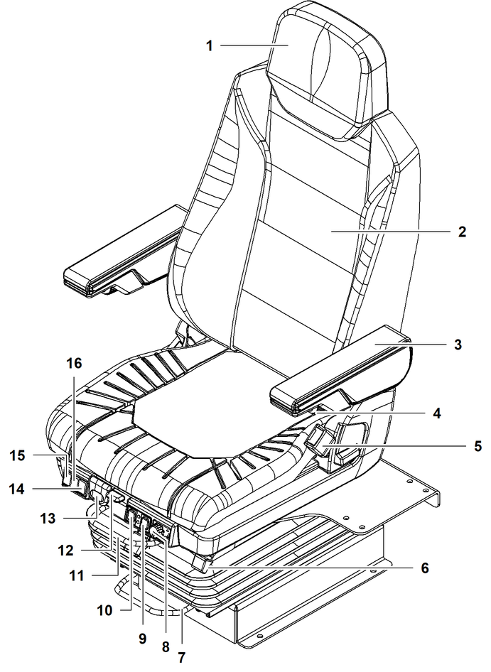

Bedienersitz

VORSICHT
Unsachgemäße Einstellungen des Steuerstands und des Bedienersitzes!
Fehlbedienung der Bedienelemente.
Steuerstand und Bedienersitz einstellen. |
Sicherstellen, dass folgende Voraussetzungen erfüllt sind:
❑ | Bedienelemente sind leicht zu erreichen. |
❑ | Kontrollelemente und Bedienelemente sind gut einzusehen. |
Bei richtiger Einstellung und bestimmungsgemäßer Verwendung des Bedienersitzes ist die ISO 2631-1 zum Schutz vor Ganzkörpervibrationen erfüllt.

Fig. 3178: Bedienersitz
Kopfstütze | |
Rückenlehne | |
Armlehne (2x) | |
Stellrad Armlehne (2x) | |
Gurtschloss* | |
Hebel Rückenlehne | |
Hebel Steuerstand Längsverstellung | |
Stellrad Sitzhöhe | |
Schalter Sitzheizung/Sitzklimaanlage | |
Schalter Stufe Sitzheizung/Sitzklimaanlage | |
Hebel Bedienersitz Längsverstellung | |
Hebel Sitztiefe | |
Hebel Sitzneigung | |
Tasten Seitenhalt | |
Tasten Untere Lendenwirbelstütze | |
Tasten Obere Lendenwirbelstütze |